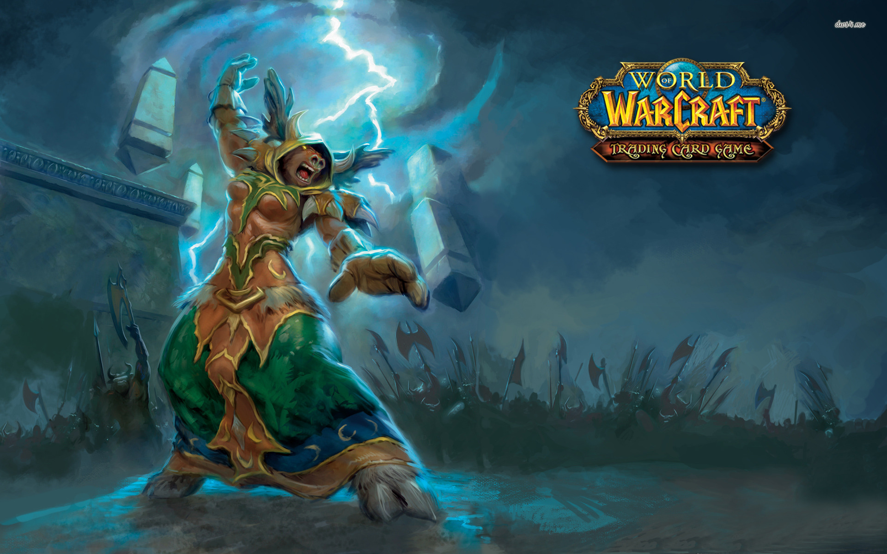

Classes
Druida (Druid): Druidas são os guardiões do mundo e os mestres da natureza com um diversificado leque de habilidades. Eles são curandeiros poderosos, capazes de curar venenos e levantar camaradas caídos no meio da batalha. O druida também chama rajadas de energia, convocando enxames de insetos para enredar os seus inimigos na terra. Mas druidas também são mestres da vida selvagem, capazes de se transformar em um grande urso, gato, leão-marinho ou nele mesmo, ganhando os seus poderes em combate ou em viagens. Druida é uma classe diversa, com uma variedade de estilos de jogo, capaz de preencher qualquer papel.
Caçador (Hunter): Caçadores são atiradores mortais capazes de levarem seus inimigos para baixo de uma distância com arcos ou rifles. Sobreviventes qualificados, eles podem rastrear os inimigos ou colocar armadilhas para causar dano e prendê-los. Eles também possuem uma conexão primária com os animais de Azeroth, sendo capazes de domar e treiná-los para mantê-los como guardiões fiéis. Sua Líder é Etsa - temida humana que com a ajuda de seu poderoso ajudante consegue matar as mais horrendas criaturas. Vestindo a armadura média de mail, os caçadores também podem empunhar armas, lutando ao lado de seus animais de estimação.
Mago (Mage): Magos exercem os elementos do fogo, gelo e arcano para destruir ou neutralizar seus inimigos. Eles são uma classe que se destaca em tratar os danos maciços de longe, lançando magias em um alvo único, ou a destruição de seus inimigos em uma ampla área de efeito. Mages também podem aumentar o poder de seus aliados, invocar comida ou bebida para restaurar os seus amigos, e até viajar por todo o mundo em um instante, abrindo portais misteriosos para terras distantes.
Paladino (Paladin): Guardiões da Luz Sagrada,paladinos apoiam seus aliados com auras santas e bênçãos para proteger seus companheiros e aumentar seus poderes. Vestindo uma armadura pesada, que pode suportar golpes letais nas batalhas mais dificeis, também pode curar seus aliados feridos e ressuscitar seus companheiros mortos. Em combate, eles podem usar armas de duas mãos, atordoar os inimigos, prender mortos-vivos e demonios, e julgar seus inimigos com a vingança sagrada. Paladinos são uma classe perfeita feitas para proteger,matar e curar projetados para qualquer tipo de situação. Paladinos também apresentam a melhor auto-defesa do jogo.
Sacerdote (Priest): Sarcedotes são os mestres da cura e preservação, da restauração de seus aliados feridos, protegendo-os em batalha, e até mesmo ressuscitar os seus camaradas caídos, seu mestre é o grandioso Embaixador Ceac - astuto humano com inúmeras habilidades e um enorme poder. Enquanto eles têm uma variedade de magias de proteção e reforço para os seus aliados, os Sarcedotes também podem causar terrível vingança sobre seus inimigos, usando os poderes da sombra ou da luz sagrada para destruí-los. Eles são uma classe diversificada e poderosa, altamente desejável em qualquer grupo, capaz de cumprir várias funções.

Ladino (Rogue): Ladinos são uma classe melee levemente blindados, capazes de causar grandes danos a seus inimigos em uma onda de ataques. Eles são mestres da furtividade e assassinatos, passando por inimigos invisíveis e marcante das sombras, em seguida, fogem do combate em um piscar de olhos. Ladinos também podem comprar os venenos que danificam ou mutilam seus inimigos, reduzindo sua eficácia na batalha. Eles podem, também, abrir portas trancadas ou caixas e desarmar armadilhas escondidas.
Xamã (Shaman): xamãs são os líderes espirituais de suas tribos e clãs. Eles são os mestres dos elementos, usando feitiços e totens para curar ou melhorar os seus aliados na batalha enquanto desencadeam a fúria dos elementos sobre os seus inimigos. O xamã pode usar armadura de malha e até mesmo empunhar uma arma de duas mãos em combate. Eles são uma classe versátil que pode caminhar para a batalha, restaurando seus aliados, enquanto arremessam relâmpagos em seus inimigos.

Bruxo (Warlock): Bruxos são mestres da sombra, chama e poder demoníaco. Eles são uma classe que se destaca assolando os seus inimigos com a doença ou maldição, arremessando raios de fogo ou sombras sobre todo o campo de batalha, e convoca demônios para ajudá-los em combate. Enquanto Bruxos são muito poderosos causando dano a uma certa distância, os seus poderes demoníacos também podem proteger ou apoiar os seus aliados na batalha, ou mesmo convocar outros jogadores de todo o mundo usando magia de ritual para invocar portais.
Guerreiro (Warrior): Guerreiros podem ser uma fúria ou um rolo compressor capaz de resistir a ataques protegendo seus aliados do mal. Eles têm uma grande variedade de ataques que fazem de tudo para aleijar seus inimigos. Causam grandes quantidades de dano em um único golpe de retaliação e aumentam a capacidade de seus aliados durante a batalha. Eles destacam a luta contra vários adversários ao mesmo tempo, ganhando ira de cada golpe dado ou recebido para desencadear os ataques. Guerreiros são uma classe versátil com uma variedade de estilo de jogo para escolher.
Cavaleiro da Morte (Death Knight): O cavaleiro da morte, é o primeiro herói de World of Warcraft que foi morto pelo flagelo dos mortos vivos (liderados pelo Lich King) e agora renasce sob o comando do mesmo. Após completar uma sequencia de missões o cavaleiro da morte é traído pelo Lich King e passa a lutar pelo bem, realizando heroísmos para se redimir de seus pecados anteriores. Armados, blindados e possuindo um arsenal de magia mortal concedida pelo Lich King, os cavaleiros da morte são uma boa classe para aqueles que gostam de um personagem que pode usar magias e ao mesmo tempo empunhar uma espada para derrotar seus inimigos.

Monge (Monk): Foi adicionada com a expansão World of Warcraft: Mists of Pandaria e pode ser de qualquer raça (exceto goblin e worgen), há três tipos de monge, o primeiro é especializado em dano corpo a corpo, o segundo é especializado em cura e o terceiro é o mestre cervejeiro, que utiliza suas habilidades para fazer bebidas que absorvem dano.